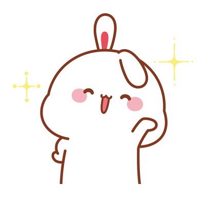
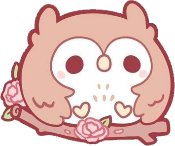
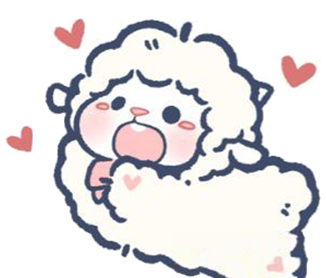
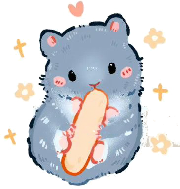
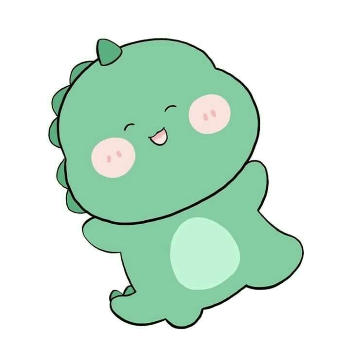
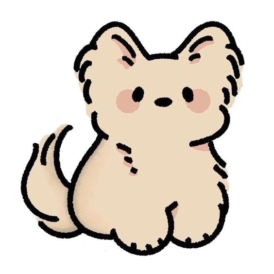
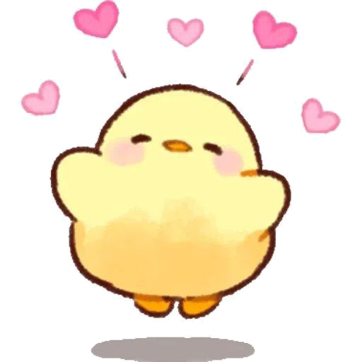
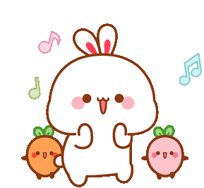
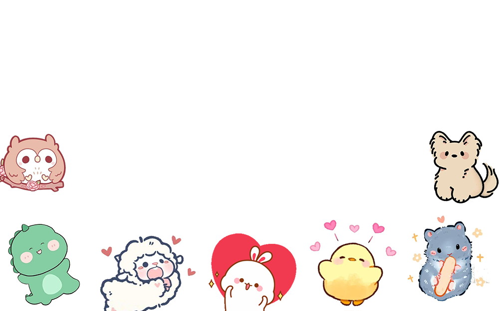

옛날 옛적에, 라온이라는 신비로운 숲 속에 특별한 게임회사가 있었어요.
이 회사에는 여러 동물 친구들이 함께 일하고 있었답니다.
토끼 아영이는 이 회사의 새로운 직원이에요. 첫 출근 날, 아영이는 설렘 반 긴장 반으로 회사에 도착했어요.
"안녕하세요!" 아영이가 인사를 건넸어요.

그러자 부엉이 윤식이가 눈을 크게 뜨고 고개를 돌려 아영이를 바라보았어요. "환영합니다, 아영 씨. 저는 QA팀의 정윤식입니다."

양 윤정이가 폭신한 털을 흔들며 다가왔어요. "아, 새로 오신 분이군요! 저는 양윤정이에요. 여기서 게임의 균형을 잡는 일을 하고 있답니다."

그때 작은 발소리와 함께 쥐 병철이가 나타났어요. "안녕하세요, 저는 신병철입니다. 게임 속 작은 버그들을 찾아내는 게 제 특기예요!"

갑자기 땅이 조금 흔들리더니, 아기공룡 지환이가 등장했어요. "안녕, 나는 송지환이야! 게임의 큰 그림을 그리는 일을 맡고 있지."

"멍멍!" 활기찬 목소리와 함께 강아지 동건이가 뛰어왔어요. "나는 황동건이야! 게임 테스트를 정말 좋아한답니다!"

마지막으로, 작은 노란 병아리가 삐약삐약 울며 다가왔어요.
"안녕하세요, 저는 이지영이에요. 게임의 세세한 부분을 꼼꼼히 살펴보는 일을 해요."

아영이는 이 특별한 동물 친구들과 함께 일하게 되어 정말 기뻤어요. 그날부터 라온 게임회사에서는 매일매일 새로운 모험이 펼쳐졌답니다.

어느 날, 큰 문제가 생겼어요.
만들고 있던 새 게임에서 캐릭터들이 갑자기 사라지는 버그가 발견된 거예요!
"이걸 어떻게 해결하지?" 모두가 걱정하고 있을 때, 아영이가 말했어요.

"우리 모두의 특기를 모아보면 어떨까요? 윤식 씨의 지혜, 윤정 씨의 균형 감각, 병철 씨의 세심함, 지환 씨의 큰 그림, 동건 씨의 열정, 그리고 지영 씨의 꼼꼼함을 합치면 분명 해결할 수 있을 거예요!"

모두가 고개를 끄덕이며 함께 힘을 모았어요. 밤낮으로 열심히 일한 결과, 마침내 문제를 해결할 수 있었답니다.

그 후로 라온 게임회사는 더욱 유명해졌고, 아영이와 친구들은 더 재미있는 게임들을 만들어갔어요.
이들의 우정과 협력은 라온 숲에서 가장 아름다운 이야기가 되었답니다.
